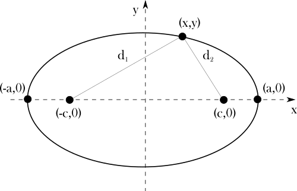
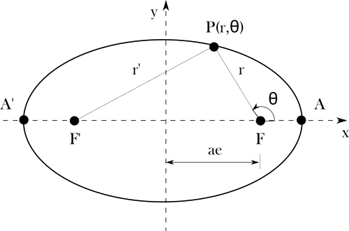
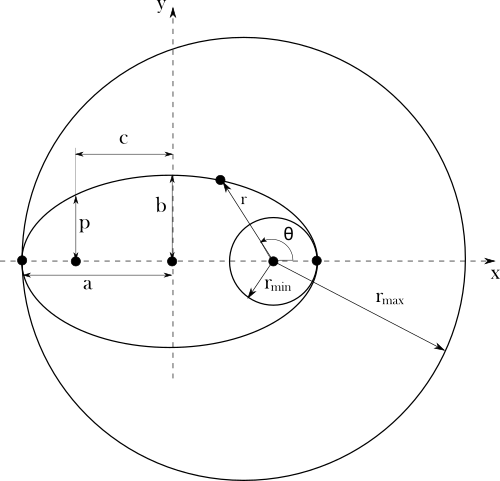

Johannes Kepler
27 December 1571 – 15 November 1630
Creator of: Planetary Motions Law
First equation of motion
Deriving the equation of an ellipse
The ellipse has two foci \((-c, 0)\) and \((c, 0)\). The point on the ellipse \((x, y)\) is always at the same distance from the sum of the distance from the foci.
$$d_{1} + d_{2} = constant $$
Distance from \((-c, 0)\) to \((a, 0)\) and from \((c, 0)\) to \((a, 0)\) are equal to:
$$(a, 0) \rightarrow (-c, 0) = a − (−c) = a + c$$
$$(a, 0) \rightarrow (c, 0) = a - c$$
$$\Rightarrow (a + c) + (a - c) = 2a$$
\begin{equation}\Rightarrow \label{eq:K1} d_{1} + d_{2} = 2a\end{equation}
Using abowe equation \eqref{eq:K1} we can use calculation for distance formula to find ellipse general equation.
$$d_{1} + d_{2} = \sqrt{(x-(-c))^{2} + (y-0)^{2}} + \sqrt{(x-c))^{2} + (y-0)^{2}} = 2a $$
$$\Rightarrow \sqrt{(x+c)^{2} + y^{2}} = 2a - \sqrt{(x-c)^{2} + y^{2}}$$
Squaring both sites, reduce similar values and after transform we get:
$$cx - a^{2} = -a \sqrt{(x-c)^{2} + y^{2}} $$
After squaring both sites again and rewrite symbols
$$x^{2}(a^{2} - c^{2}) + a^{2}y^{2} = a^{2}(a^{2}-c^{2}) $$
Using substitution \(b^{2} = a^{2} - c^{2}\) and dividing both sides by \(a^{2}b^{2}\) we get:
\begin{equation} \label{eq:K2} \frac{x^{2}}{a^{2}} + \frac{y^{2}}{b^{2}} = 1 \end{equation}
Where variable \(a\) is named semi-major axis and \(b\) is named semi-minor axis.

Ecllipse polar coordinates
In polar coordinates we can derive the pattern for distance \(r\) between focus point \(F\) and position of object on elipse \(P\). Using cosines law for triangle \(\bigtriangleup F'PF\) we can write equation for side \(r'\) with opposite corner angle \(180^{\circ}-\theta\).
$$r'^{2} = r^{2} + (2ae)^{2} - 2r(2ae)cos(\pi-\theta)$$
Considering \eqref{eq:K1}, that is:
$$r' + r = 2a$$
$$\rightarrow r'^{2} = (2a -r)^{2}$$
We can write abowe equation
$$(2a -r)^{2} = r^{2} + (2ae)^{2} - 2r(2ae)cos(\pi-\theta)$$
$$\rightarrow r'^{2} = (2a -r)^{2}$$
After getting squared and grouping the similar variables we get:
$$-4ar + 4arecos(\pi-\theta) = 4a^{2}e^{2} - 4a^{2}$$
dividing this by 4 and solving for \(r\) we get:
$$r = \frac{a^{2}(e^{2}-1)}{a(ecos(\pi-\theta)-1)}$$
Cosine in this angular range is negative. By multiplign abowe and down divider value by (-1) we get:
\begin{equation} \label{eq:K3} r = \frac{a(1-e^{2})}{1+ecos(\theta)}\end{equation}
Ecllipse heliocentric coordinates
Using heliocentric coordinates system we can describle elipse with new parameters eccentricity \(e\) and semi-latus rectum \(p\).
\begin{equation} \label{eq:K4} e = \frac{c}{a}\end{equation}
\begin{equation} \label{eq:K5} p = \frac{b^{2}}{a}\end{equation}
$$r_{min} = \frac{p}{1+e}$$
$$r_{max} = \frac{p}{1-e}$$
Equation for eccentricity \eqref{eq:K4} can by described by values \(a\) and \(b\):
$$e^{2} = \frac{c^{2}}{a^{2}}$$
$$where \quad c^{2} = a^{2} - b^{2}$$
$$\rightarrow e = \sqrt{1-\frac{b^{2}}{a^{2}}}$$
Equation for eccentricity \eqref{eq:K5} can by described by values \(a\) and \(e\):
$$p = \frac{a^{2}-c^{2}}{a} = a-\frac{c^{2}}{a}$$
Considering \eqref{eq:K4} we get:
$$p = a-ae^{2} = a(1-e^{2})$$
Substitute abowe to \eqref{eq:K3} we get final Keppler equation:
\begin{equation} \label{eq:K6} r = \frac{p}{1+ecos(\theta)}\end{equation}
Keppler's equation for planetary elliptical orbits gives distance \(r\) to orbiting object \(P\) from focal point \(F\) by using below variables:
r - radial distance
p - semi-latus rectum
e - eccentricity
\(\theta\) - true anomaly
Second equation of motion